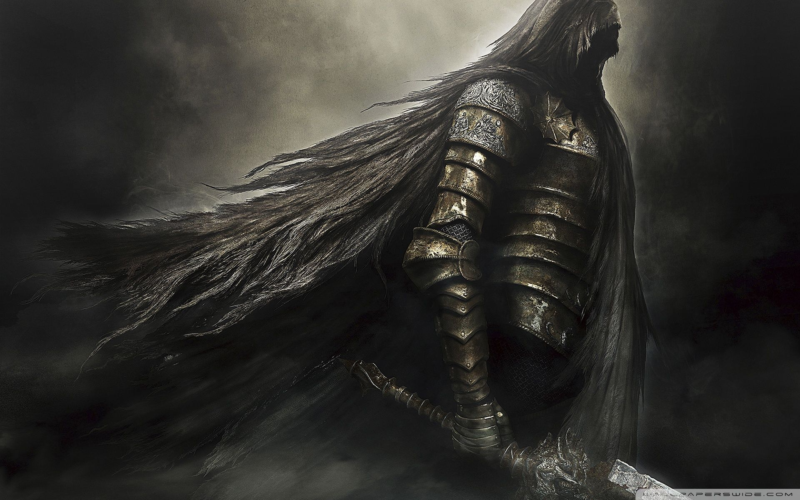
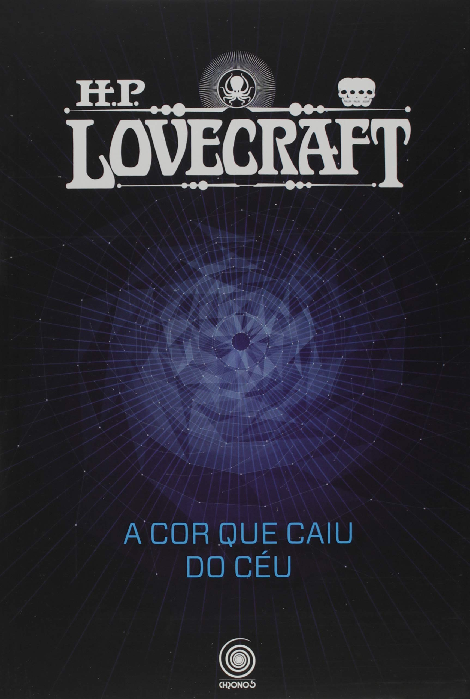

Games
Em primeira instância, posso afirmar que sou fascinado em games e desde criança ficava enfurnado no quarto jogando o quanto podia. Meu pai e eu costumávamos jogar juntos, logo tive a oportunidade de jogar vários jogos de diferentes gêneros e aproveitar a essência de cada um, ademais, conforme fui jogando descobri que o estilo de jogo que eu mais gostava eram os RPGs e de Simulação de guerra.
1. Elder Scrolls V: Skyrim
2. Elden Ring

3. Dark Souls 2
4. Battlefield V

Leitura
Na minha adolescência, eu adquiri o costume de ler os famosos Mangás, que retratam, em sua maioria, obras japonesas compostas de vários gêneros que por sua vez deram vida aos Animes também. Além das obras orientais, andei esses tempos me voltando ao mundo dos contos e tendo como favorito as obras de H.P. Lovecraft que relatam aventuras de horror cósmico com uma pitada de terror psicológico em um infindável universo de criaturas medonhas e de aparência abstrata
1. Naruto

2. One Punch Man
3. Berserk

4. Jujutsu Kaisen

5. Contos H.P Lovecraft
Desenho
Sempre tive o lado criativo mais aguçado que o lógico, feito isso, a arte era algo que uma hora ou outra aparecia no meu dia a dia, e o maior exemplo disso são os desenhos. Peguei o hábito de desenhar desde criança e o mantenho até hoje apesar de ser menos frequente, além disso é inegável que os jogos e a leitura me influenciaram bastante para a arte, já que com a visão criativa que eu tenho me anima de criar rabiscos sobre algo que me chama atenção.